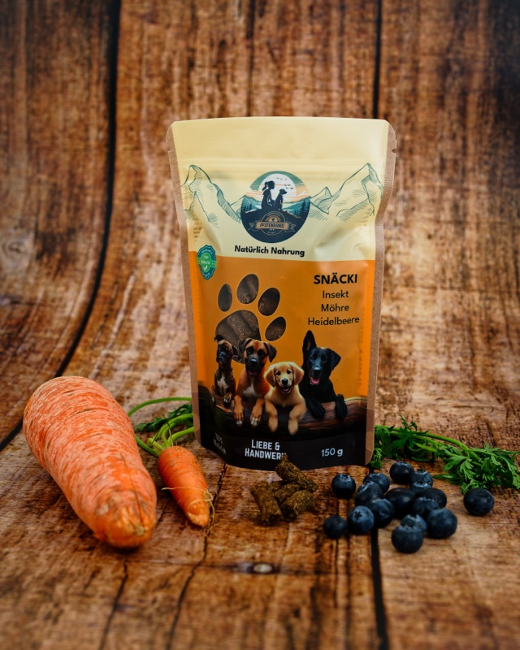
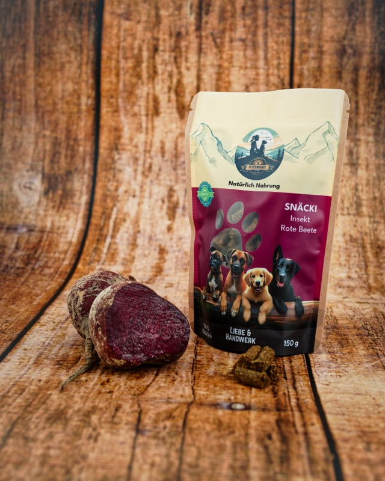

Die sind wie wir, nur ein bisschen anders.
Lernkarten rund um die Ernährung des Hundes: kurz, mit Fragen und einer Rückmeldung zu jeder Antwort. Sie erklären, was „Natürlich Nahrung“ für die Pfotenbande bedeutet und warum.
Nicht als Kurs mit festen Zeiten, sondern als Wissen, das auf dem Telefon bereitliegt: auf dem Spaziergang, auf dem Sofa, vor dem Einkauf.

Für Hundehalter, die wissen wollen, was im Napf liegt
Du musst weder Tierärztin noch Ernährungsberater sein. Du willst einfach verstehen, was dein Hund frisst und warum. Dafür sind die Karten gemacht.
- Du willst es richtig machen. Dein Hund gehört zur Familie. Du möchtest wissen, was im Napf landet, statt Werbeversprechen zu glauben.
- Du schaust auf die Zutatenliste. Prozentzahlen und Fachwörter sagen allein wenig. Du lernst, wonach sich zu fragen lohnt.
- Dir ist Tierwohl wichtig. Auch für Hundefutter stammt Protein von Tieren. Du erfährst, wie die Pfotenbande damit umgeht, ohne erhobenen Zeigefinger.
Sechs Themen, kurz erklärt
Alles ist in kurze Karten gepackt. Zu jeder Karte gibt es Fragen und eine Rückmeldung zu jeder Antwort, auch zu den falschen.
- Vom Wolf zum Haushund: wie aus Nähe eine gemeinsame Geschichte wurde
- Kein Wolf im Wohnzimmer: was Anpassung für die Ernährung bedeutet
- Tierisches Protein, bewusst ausgewählt
- Getreide, Kartoffeln und die Bedeutung der Zubereitung
- Ausgewogen ernähren, ohne den Napf zum Rechenblatt zu machen
- Ganze Zutaten, nachvollziehbare Rezepturen und echtes Handwerk
Die Karten geben die Haltung der Pfotenbande wieder. Eine Beratung durch deine Tierärztin oder deinen Tierarzt ersetzen sie nicht.
Protein mit Verantwortung
Die Pfotenbande setzt tierisches Protein aus Insektenlarven, Fisch aus zertifizierten Quellen und Eiern aus möglichst hochwertiger ökologischer Haltung nach Demeter-Standard ein. Fleisch aus industrieller Massentierhaltung kommt nicht in die Rezepturen.
Das ist keine Anklage gegen den Fleischkonsum. Die Pfotenbande will niemanden bekehren und niemandem ein schlechtes Gewissen machen. Sie zeigt, dass ausgewogene Hundeernährung auch anders möglich ist.

Liebe & Handwerk
Natürlich Nahrung heißt hier nicht roh oder besonders fleischreich. Es heißt: gute, nachvollziehbare Zutaten und eine Verarbeitung, die dem Lebensmittel gerecht wird.
- Ganze, erkennbare Zutaten. Die Pfotenbande will wissen, woher ihre Zutaten kommen und wozu sie in der Rezeptur dienen.
- Eigene Rezepturen. Jede Zutat wird danach beurteilt, was sie beiträgt und wie gut sie vertragen wird, nicht nach einer werbewirksamen Fleischquote.
- Schonend hergestellt. So wenig Verarbeitung wie möglich, so viel wie nötig. Die Herstellung bekommt Zeit statt maximalem Druck.
Häufige Fragen
Wie komme ich hinein?
Über „Zugang anfragen“ oder mit einer Einladung. Der Zugang ist zunächst auf eingeladene Teilnehmende begrenzt.
Muss ich etwas installieren?
Nein. Der Lernbereich läuft im Browser, auf dem Telefon wie am Rechner.
Wer möchte, legt den Lernbereich trotzdem wie eine App auf den Startbildschirm. Das geht ohne App-Store (technisch eine „Progressive Web App“, kurz PWA). Dazu zuerst „Anmelden“ öffnen; die Schritte gelten für den Lernbereich, nicht für diese Startseite.
iPhone und iPad: In Safari auf „Teilen“ tippen (Quadrat mit Pfeil nach oben), „Zum Home-Bildschirm“ wählen und „Hinzufügen“ bestätigen.
Android: In Chrome auf das Menü (drei Punkte) tippen, „App installieren“ oder „Zum Startbildschirm hinzufügen“ wählen und bestätigen.
Danach liegt ein Symbol namens „Plinyoo“ auf dem Startbildschirm, und der Lernbereich öffnet sich wie eine App, ohne Adressleiste. Die Namen der Menüpunkte können je nach Gerät und Version etwas anders lauten.
Was lerne ich hier?
Zum Start: Natürlich Nahrung. Wie aus Wölfen Haushunde wurden, was Anpassung für die Ernährung bedeutet, wie die Pfotenbande tierisches Protein auswählt, warum die Zubereitung zählt und wie ihre Rezepturen entstehen. Weitere Themen können folgen.
Wer schreibt und prüft die Inhalte?
Die Inhalte stammen aus dem Text „Natürlich Nahrung“ der Pfotenbande und geben deren Haltung wieder. Eine fachliche Prüfung durch eine Fachperson für Tierernährung hat noch nicht stattgefunden.
Ersetzen die Karten eine Fütterungsberatung?
Nein. Die Karten erklären Haltung und Hintergründe der Pfotenbande. Bei Krankheit, Allergien oder Fragen zum Bedarf deines Hundes berät dich eine Tierärztin oder ein Tierarzt.
Wer sieht meine Antworten?
Niemand außer dem Lernenden sieht die Antworten.